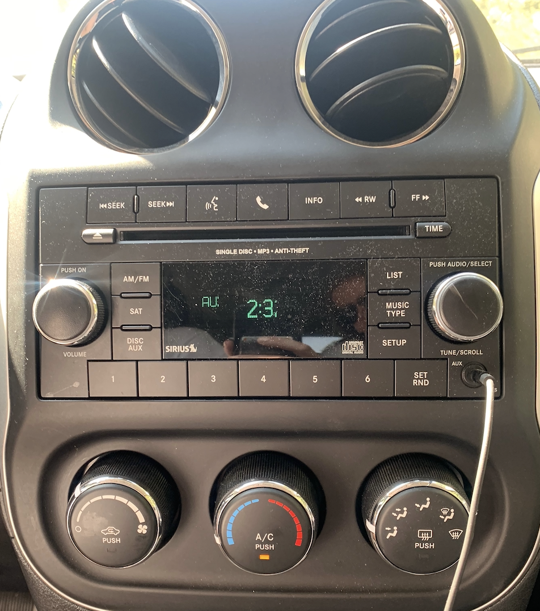

Introduction
- In design, we think of balance in terms of visual weight. There are three kinds of balance: radial, symmetrical, and asymmetrical. Radial: Circular designs in which the fulcrum lies at the center. Symmetrical: Each side of a bisected design must be a mirror image of the other in terms of visual weight Asymmetrical: Reveals two unequal sides if bisected. White Space is Not You Enemy, by Golombisky and Hagen (2016). Focal Press.
- Balance means that in terms of visual weight, the design is not overly weighted towards one side. Balance can be used to invoke emotion.
Taken on an Iphone XS
